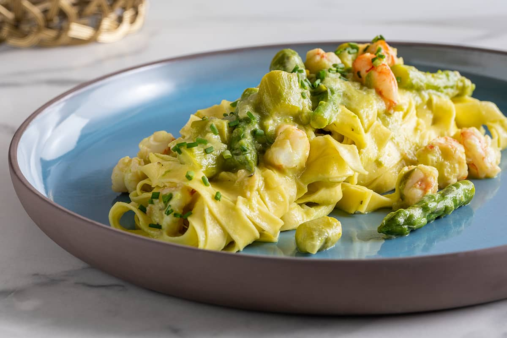

Pasta with asparagus and shrimps

A simple main course with a spring flavor. The preparation is easy and rather quick because it takes a few minutes to
cook the
shrimps
and even the
asparagus
should not be cooked for long to not ruin the tips and keep a little crunchy.
This tasty recipe has its strong point in a combination that combines the flavor of the sea with
that of a typical spring vegetable.
Ingredients
- 250 g of
tagliatelle
- 400-500 g of asparagus
- 180 g of peeled shrimps
- 40 g of butter
- 50 g of white wine
- 1 small golden onion
- chives
- extra virgin olive oil
- salt and pepper
Steps
- Cut off the base and peel the lighter and leathery part of the asparagus, then boil them for 5-10 minutes,
drain, recovering a little of the cooking water. Cut half into rounds, keeping the tips.
- Blend the other half of the asparagus with a ladle of cooking water until creamy. Set it aside.
- Melt the butter in a pan, add the finely chopped onion and let it dry for about 3 minutes over medium heat. Then, add
the asparagus cut into rings to the onion and brown them.
- Then add the prawn tails, cook for a few minutes, then blend with the white wine. Let it evaporate.
Season with salt and pepper and continue cooking over moderate heat.
- Meanwhile, cook the pasta. Drain it, keeping the cooking water aside. Pour the tagliatelle into the pan with the sauce, add the asparagus
cream and the tips kept aside
- Sauté a few moments and, if necessary, add a few tablespoons of cooking water.
Spread the asparagus and shrimp tagliatelle on the plates and serve with the chopped chives.
All credits go to Il Cucchiaio d'Argento
Back to the Romantic Dinner Menu